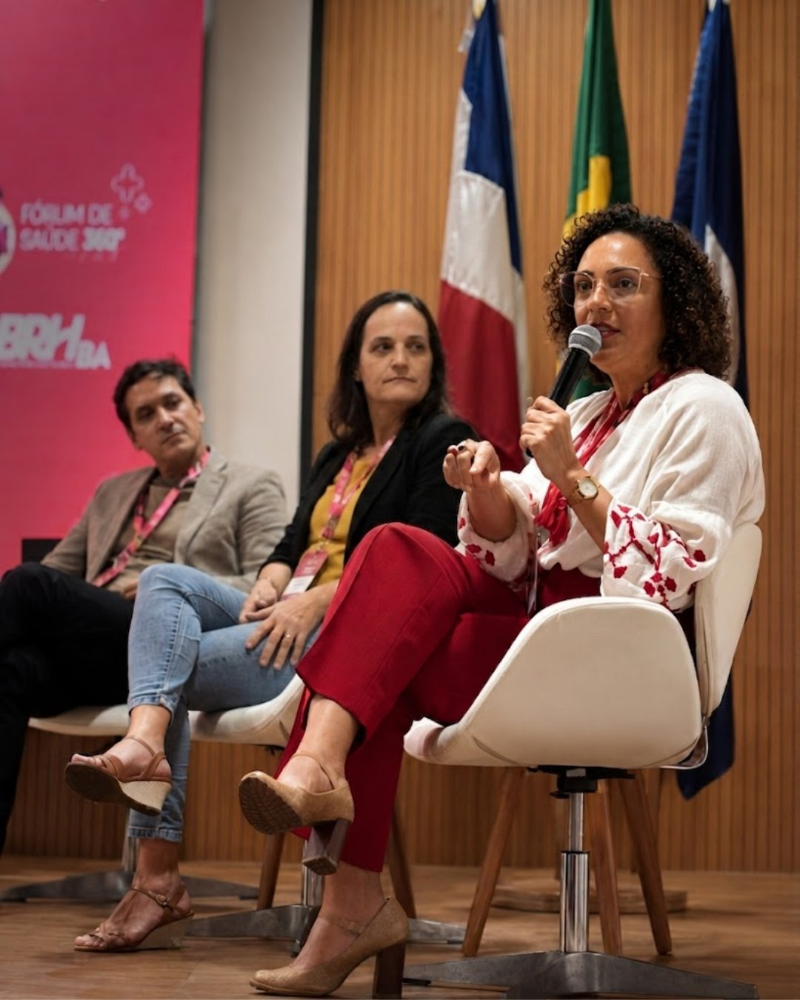

Online
Para times que querem aprofundar tema específico em formato dialogado, com facilitação clínica. Inclui material de apoio em PDF e certificado de participação.
Proposta conforme escopo
Encontros para grupos pequenos de líderes, RH ou gestores que precisam discutir situações reais, nomear o que está acontecendo e sair com repertório prático.

"Não é uma palestra. É uma conversa com quem sabe o que está acontecendo — e não tem medo de nomear."
A Roda é menor e mais participativa que a palestra. O grupo traz dúvidas, discute casos anonimizados e constrói leitura comum com facilitação clínica.
Cada encontro é montado conforme o cenário do contratante. Estes são os temas que mais aparecem em demandas de empresas e times de liderança.
Para times que querem aprofundar tema específico em formato dialogado, com facilitação clínica. Inclui material de apoio em PDF e certificado de participação.
Proposta conforme escopo
Para empresas e organizações na região metropolitana. Mesmo entregável da modalidade online, com presença e dinâmica em sala.
Proposta conforme escopo
Quatro encontros em sequência ou ao longo de período acordado. Inclui material por sessão, certificado e exemplar do livro Quando o Trabalho Dói para a empresa contratante. Online ou presencial.
Proposta conforme escopo
Envie o contexto, tamanho do grupo e tema prioritário. A proposta volta com formato recomendado, duração e próximos passos.